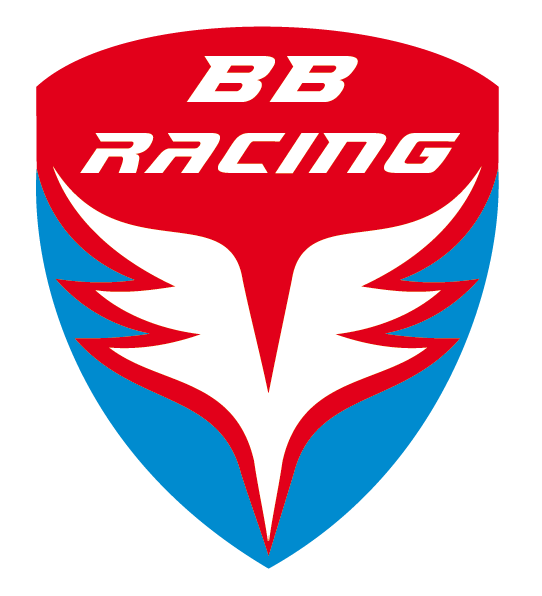

Tréninková filosofie
aneb
Proč a jak a podle jakých zásad s dětmi v našem oddíle sportujeme
V oddíle BB Racing pracujeme v tuto chvíli s dětmi mladšího školního věku. Jsme sportovně cyklistický oddíl a adekvátně k věku se věnujeme zejména cvičením všeobecně rozvíjejícím, jejichž cílem je všeobecný pohybový rozvoj, v menší míře speciálním cvičením, které zlepšují úroveň finálního závodního výkonu. Závodní cvičení přijdou na řadu později ☺ Nejsme zastánci předčasné specializace. Se závoděním jako takovým nespěcháme. Nechceme děti vystavovat zbytečnému stresu příliš brzy a jsme zastánci názoru, že ke správnému závodění srdcem se musí dítě radostně prosportovat. A když pak chce teenager sám o své vůli závodit, pojďme ho podpořit všemi dostupnými prostředky.
Dětský organismus jako takový prochází různými vývojovými fázemi, a ne jinak je tomu i v oblasti tělesného a pohybového rozvoje. Na tyto vývojové fáze bereme ohled při tvorbě tréninkového plánu. Snažíme se využívat senzitivních období pro optimalizaci jednotlivých pohybových schopností a dovedností. Děti se v této fázi učí techniku pohybů, neboť dokonalé zvládnutí čehokoliv vyžaduje čas a mnohonásobné opakování. Sílu a vytrvalost dokáže sportovec natrénovat i v pozdějším věku, ale na dokonalé technické zvládnutí už je v dorosteneckém věku pozdě. V mladším školním věku jde zejména o vytvoření a upevňování správných pohybových vzorců, ze kterých se čerpá později, ať už v oblasti sportovního růstu, tak v oblasti správného zdravého tělesného vývoje.
Vzhledem k tomu, že úkolem tréninku obecně je adaptace organismu na zátěž, snažíme se o maximální pestrost, která podporuje všeobecný pohybový rozvoj, nezbytný pro eventuální budoucí závodní činnost. Uvědomujeme si, že „všechno má svůj čas“, objem a intenzita tréninku se bude zvětšovat postupně, abychom předešli nebezpečí předčasných adaptačních změn, které by mohly být příčinnou neschopnosti organismu reagovat na specifické podněty nutné pro kvalitní trénink v pozdějším věku.
Děti nepovažujeme v žádném případě za „malé dospělé“. Námi vedené tréninky mají přípravný charakter, činnosti jsou přiměřené věku a schopnostem dětí. Věříme, že příznivě přispívají i k fyzickému a mentálnímu rozvoji dětí, pomáhají jim chápat smysl pravidel, podporují schopnost soustředění, smysl zodpovědnosti a upevňují sebedůvěru dětí. Těší nás i přátelský sociální aspekt, kdy se na trénincích setkávají kluci a holky, děti menší a větší a všichni si užívají společné chvíle. Nepodporujeme rivalitu, naopak podporujeme osobní rozvoj a individuální zlepšování.
Děti jsou velice křehká a vzácná stvoření, která se mění den za dnem. Dětství je neopakovatelný čas, kdy se pod vlivem mnoha faktorů formuje člověk, osobnost a duše
Vnímáme zdravý a promyšlený rozvoj dítěte jako nesmírně důležitou věc. Dítě se učí vnímat svoje tělo, rozvíjí svoje schopnosti, zvyšuje množství dovedností. Skládá postupně svojí životní mozaiku. Považujeme zdraví a s ním související tělesnou zdatnost za velmi důležitý hybatel dalšího osudu. To, co se naučíme, máme k dispozici každý den a po celý život. Nedostatek času je relativní pojem aneb vše je o prioritách. To, že pozorné přihlížení a všímavost potřebují více času a hlavně více trpělivosti než kvapné povrchní míjení, neplatí pouze pro oblast pohybu. Pozorné, trpělivé a láskyplné zacházení s tělem je prvním krokem k větší stálosti, orientaci a rovnováze. Promyšlená pohybová aktivita příznivě přispívá k všestrannému rozvoji dítěte a jeho pozdějšímu vnímání světa.
Uvědomujeme si, že si děti potřebují především hrát a bavit se, a tak ruku v ruce s rozvojem pohybových schopností a dovedností, se snažíme o to, aby trénink děti bavil, aby měly z pohybu radost a užívaly si přátelskou atmosféru a společných tréninků. V mladším školním věku se buduje vztah ke sportu jako celoživotní aktivitě. Jen málo dětí se bude věnovat skutečně vrcholovému sportu. Naším cílem je ukázat svěřencům pozitivní efekt sportování. Chceme, aby pohyb zařadili navždy do repertoáru denních činností, které pomáhají udržet si optimální zdravotní stav (psychický i fyzický) a vytvářet a upevňovat společenské vazby. Snažíme se pokládat základy budoucího tréninku, ať už profesionálního, tak amatérského, snažíme se předat dětem námi sdílenou lásku k pohybu.